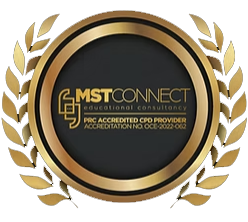
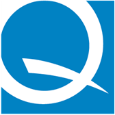
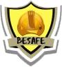
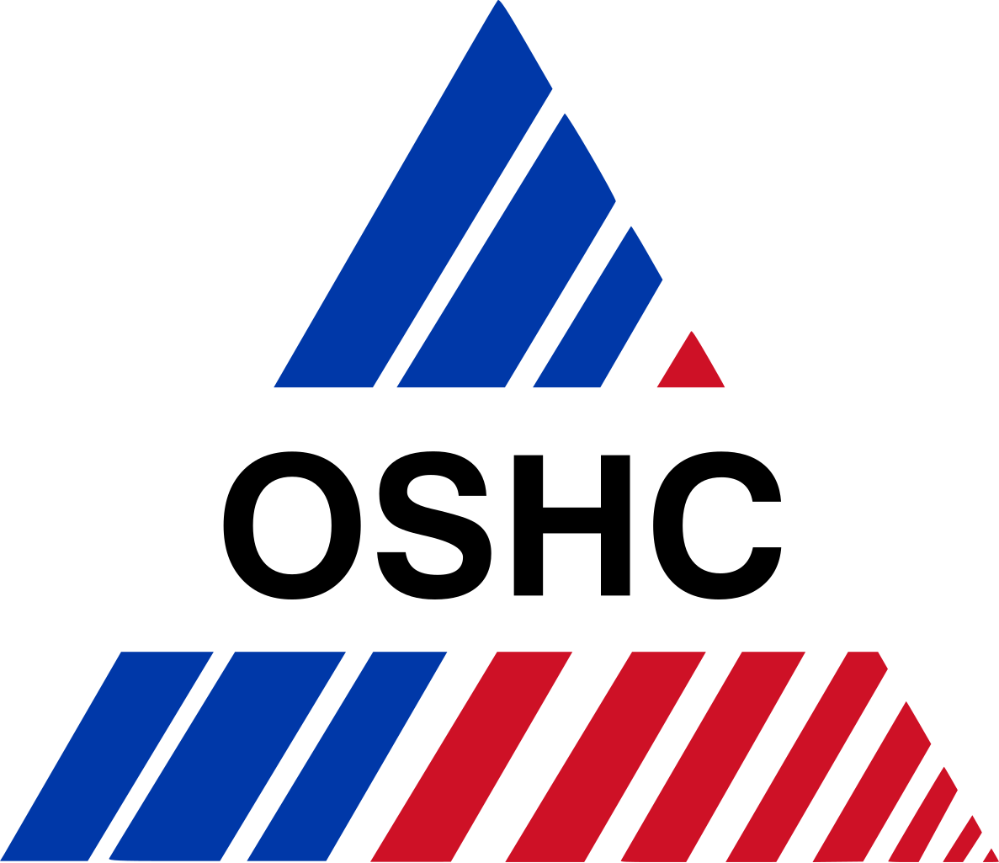
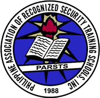
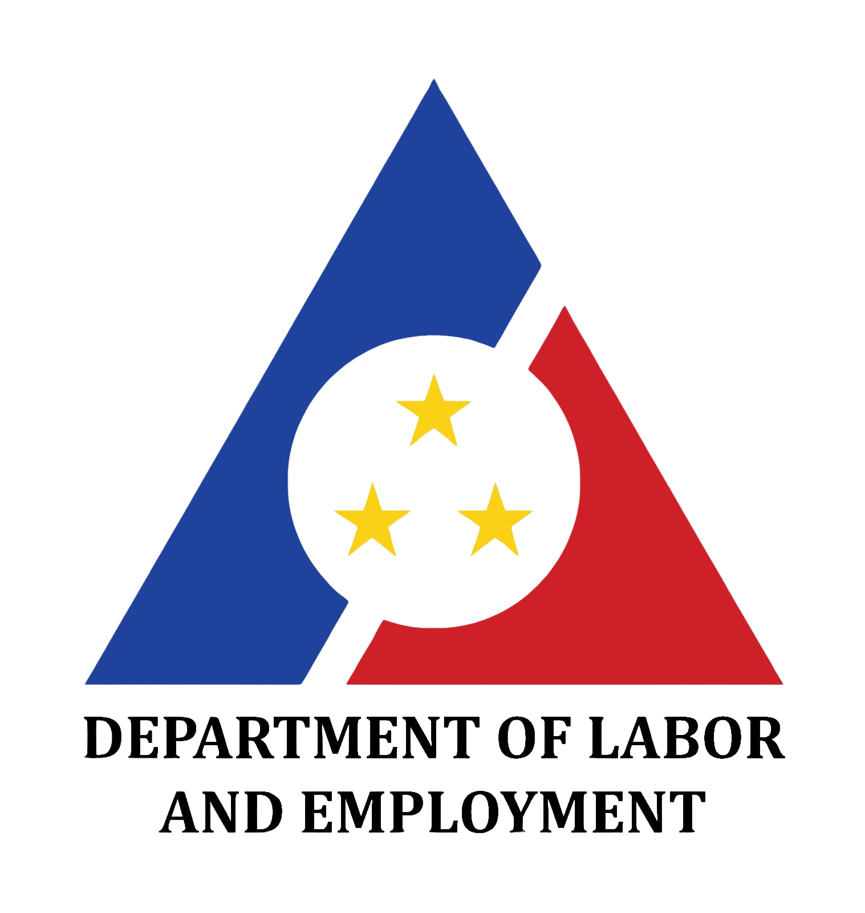
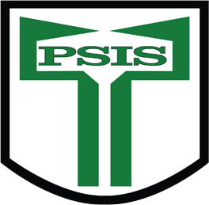
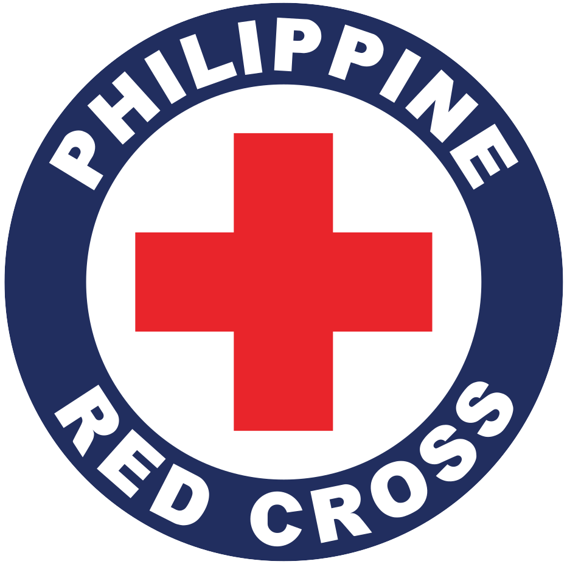

<style>
 #skills-training {
        font-family: "Century Gothic", sans-serif;
        display: flex;
        justify-content: center;
        align-items: center;
        min-height: 100vh;
        padding: 10px;
        overflow-y: auto;
    }
    .container {
        width: 80%;
        max-width: 800px;
        background-color: #fff;
        padding: 15px;
        border-radius: 10px;
        box-shadow: 0px 0px 10px rgba(0, 0, 0, 0.1);
        text-align: center;
    }
    ul {
        list-style-type: none;
        padding: 0;
        margin: 0;
    }
    li {
        display: flex;
        align-items: center;
        justify-content: space-between;
        margin-bottom: 10px;
        padding: 5px;
        border-radius: 8px;
        transition: transform 0.3s ease-in-out, background-color 0.3s ease-in-out;
    }
    li:hover {
        transform: scale(1.09);
        background-color: #81D4FA;
    }
    .icon {
        width: 80px;
        height: 80px;
        margin-left: 5px;
    }
    .icon:hover {
            transform: scale(1.5);
    }
    .training-content {
        flex: 1;
        text-align: left;
        margin: 0;
    }
    h2, h3, p {
        margin: 5px 0;
    }
    .home-button {
            display: inline-block;
            margin-top: 20px;
            padding: 10px 20px;
            background-color: #880E4F;
            color: white;
            text-decoration: none;
            border-radius: 5px;
    }
    .home-button:hover {
            background-color: #e1ed02;
    }
    .logo {
            width: 55px;
            margin-top: 10px;
            transition: transform 0.3s ease-in-out;
    }
    .logo:hover {
            transform: scale(1.7);
    }
    
</style>

<section id="skills-training">

    <div class="container">
     <h1>My Journey of Continuous Learning and Excellence</h1>
        <p>In a world where growth is the key to success, I have always believed in the power of continuous learning and self-improvement. My journey has been driven by an unwavering commitment to upskilling and upgrading my expertise, ensuring that I stay ahead in an ever-evolving professional landscape.</p>
        <p>From mastering risk management, security operations, and business continuity to earning certifications in project leadership, Six Sigma, and quality management, I have pursued every opportunity to refine my skills. Each training and seminar I have undertaken represents more than just credentials—it embodies my dedication to excellence, adaptability, and a relentless pursuit of knowledge.</p>
        <p>Whether it’s enhancing operational efficiency, leading with strategic foresight, or ensuring safety and security, I have equipped myself with the expertise needed to thrive in high-stakes environments. My commitment to professional development is not just about gaining knowledge—it’s about applying that knowledge to create impactful results and drive meaningful change.</p>
        <p>This collection of certifications and training programs is a testament to my dedication, discipline, and vision for continuous growth. Because for me, learning never stops—it evolves, transforms, and empowers.</p>
    <div class="container">
        <h2>Skills, Trainings and Seminars</h2>
        <ul>
            <li>
                <div class="training-content">
                <h3>Operations Risks Management 101</h3>
                <p><strong>Provider:</strong> MST Connect - OCE-2022-062</p>
                <p><strong>Date:</strong> July 2023</p>
                </div>
               
            </li>
            <li>
                <div class="training-content">
                <h3>Project Management and Leadership 101</h3>
                <p><strong>Provider:</strong> MST Connect - OCE-2022-062</p>
                <p><strong>Date:</strong> August 2023</p>
                </div>
               
            </li>
            <li>
                <div class="training-content">
                <h3>Lean Six Sigma White Belt</h3>
                <p><strong>Provider:</strong> ASQ Certified MBB - 65316044</p>
                <p><strong>Date:</strong> February 1, 2023</p>
                </div>
               
            </li>
            <li>
                <div class="training-content">
                <h3>Front Office National Certificate II</h3>
                <p><strong>Provider:</strong> TESDA - NCR</p>
                <p><strong>Date:</strong> May 2020</p>
                </div>
               
            </li>
            <li>
                <div class="training-content">
                <h3>Loss Control Management and HIRAC (SO3)</h3>
                <p><strong>Provider:</strong> BeSafe Training Management</p>
                <p><strong>Date:</strong> September 12-15, 2022</p>
                </div>
               
            </li>
            <li>
                <div class="training-content">
                <h3>Quality Management System - ISO 9001:2015</h3>
                <p><strong>Provider:</strong> CQL Business Systems Consulting</p>
                <p><strong>Date:</strong> May 11, 2018</p>
                </div>
               
            </li>
             <li>
                <div class="training-content">
                <h3>16TH NOSH CONGRESS</h3>
                <p><strong>Provider:</strong> OSH Center</p>
                <p><strong>Date:</strong> November 20-21, 2018</p>
                </div>
               
            </li>
             <li>
                <div class="training-content">
                <h3>PRIVATE SECURITY EXECUTIVE MANAGEMENT</h3>
                <p><strong>Provider:</strong> PNP-CSG SOSIA</p>
                <p><strong>Date:</strong> September 29-30, 2016</p>
                </div>
               
            </li>
             <li>
                <div class="training-content">
                <h3>CERTIFIED SECURITY TRAINER</h3>
                <p><strong>Provider:</strong> PARSTSI Certification Number: 2015-638</p>
                <p><strong>Date:</strong> May 17, 2015</p>
                </div>
               
            </li>
             <li>
                <div class="training-content">
                <h3>BASIC OCCUPATIONAL SAFETY AND HEALTH (BWC-DOLE)</h3>
                <p><strong>Provider:</strong> PSIS, License 13-252-5271</p>
                <p><strong>Date:</strong> April 30, 2014 – Present</p>
                </div>
               
            </li>
             <li>
                <div class="training-content">
                <h3>CERTIFIED SECURITY PROFESSIONAL</h3>
                <p><strong>Provider:</strong> PSIS, License 13-252-5271</p>
                <p><strong>Date:</strong> February 2013 – Present</p>
                </div>
               
            </li>
             <li>
                <div class="training-content">
                <h3>INFORMATION SECURITY MANAGEMENT SYSTEMS TRAINING</h3>
                <p><strong>Provider:</strong> Accenture Pioneer House</p>
                <p><strong>Date:</strong> February 24 – 25, 2011</p>
                </div>
               
            </li>
             <li>
                <div class="training-content">
                <h3>BUSINESS CONTINUITY MANAGEMENT TRAINING</h3>
                <p><strong>Provider:</strong> Accenture Pioneer House Bldg.</p>
                <p><strong>Date:</strong> March 1, 2011</p>
                </div>
               
            </li>
             <li>
                <div class="training-content">
                <h3>FIRST AID TRAINING (STANDARD)</h3>
                <p><strong>Provider:</strong> Philippine National Red Cross Cebu Chapter</p>
                <p><strong>Date:</strong> September 6 – 9, 2010</p>
                </div>
               
            </li>
             <li>
                <div class="training-content">
                <h3>BASIC LIFE SUPPORT (CPR for HEALTHCARE PROVIDER)</h3>
                <p><strong>Provider:</strong> Philippine National Red Cross Cebu Chapter</p>
                <p><strong>Date:</strong> September 14 – 15, 2010</p>
                </div>
               
             </li>
           </ul>
            <a href="https://jmacaambac.github.io/mywebprofile/" class="home-button">Home</a>
            <div>
        
    </div> 
</section>
   
